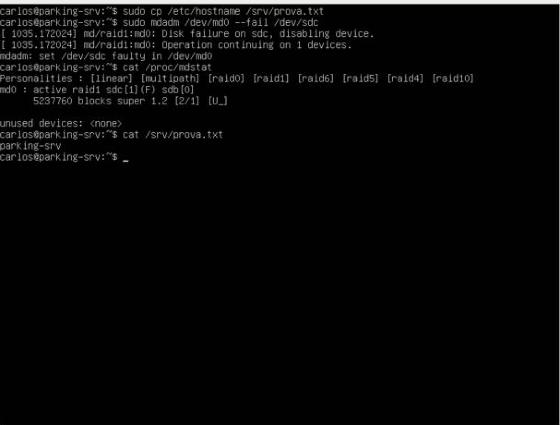
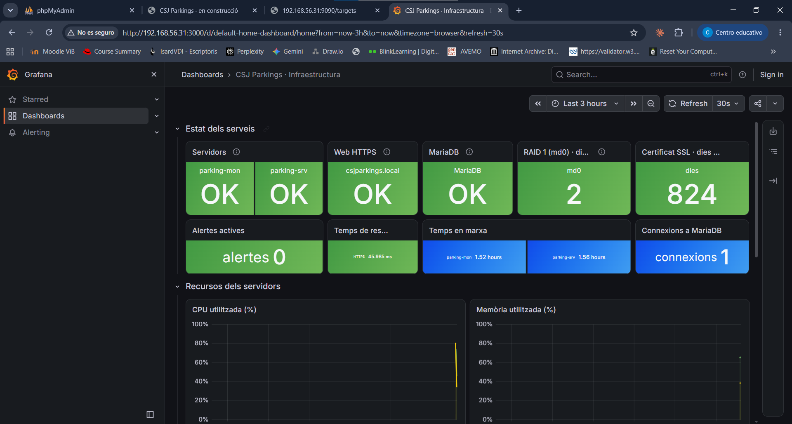
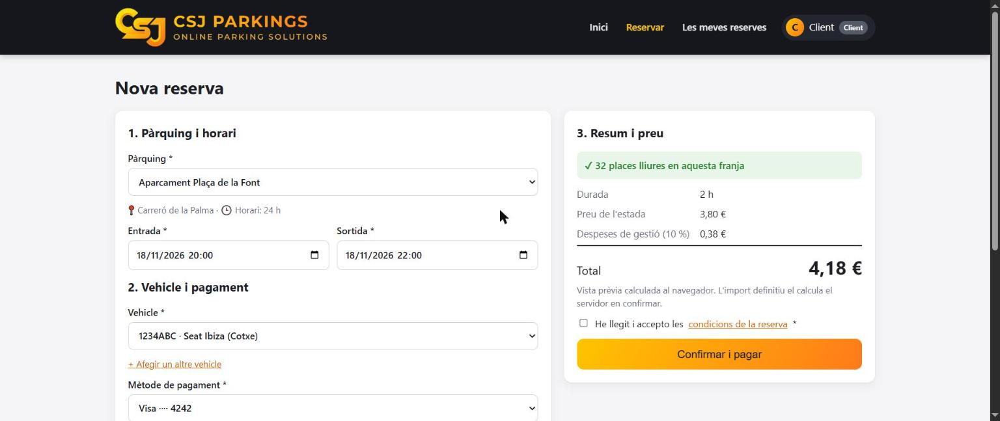
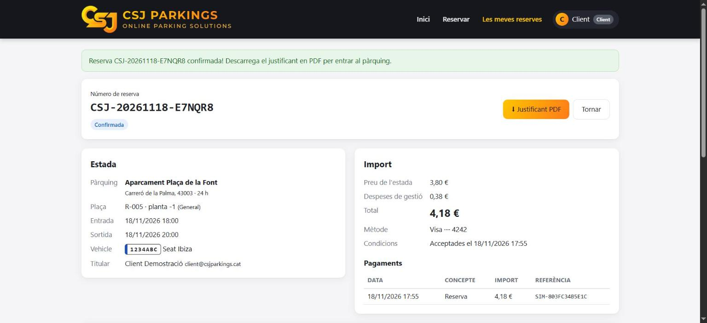
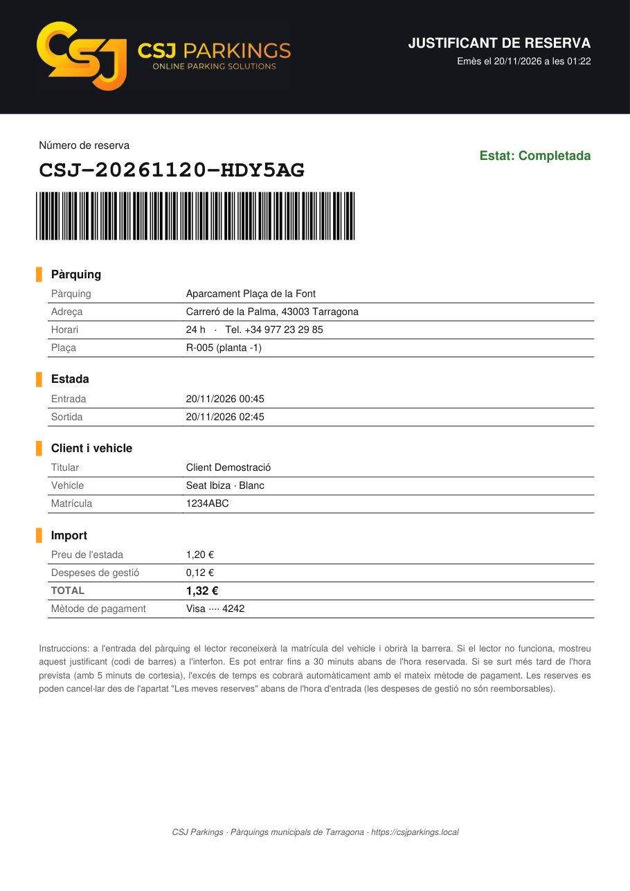
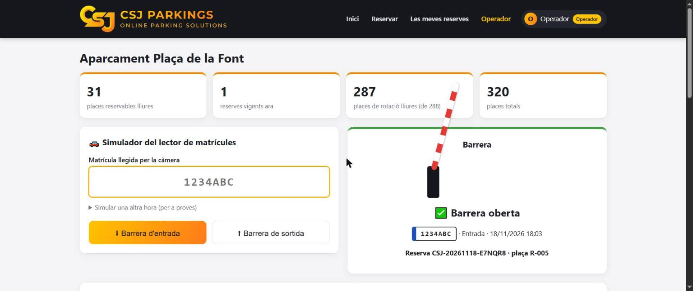
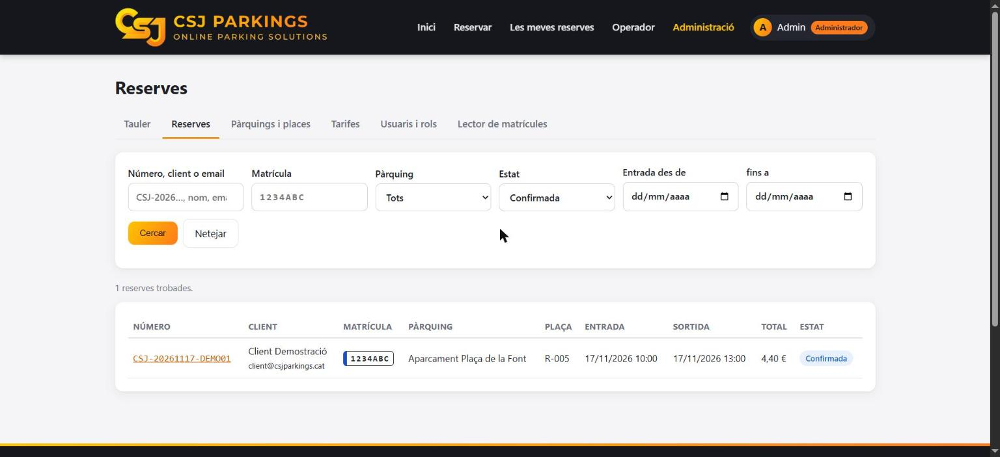
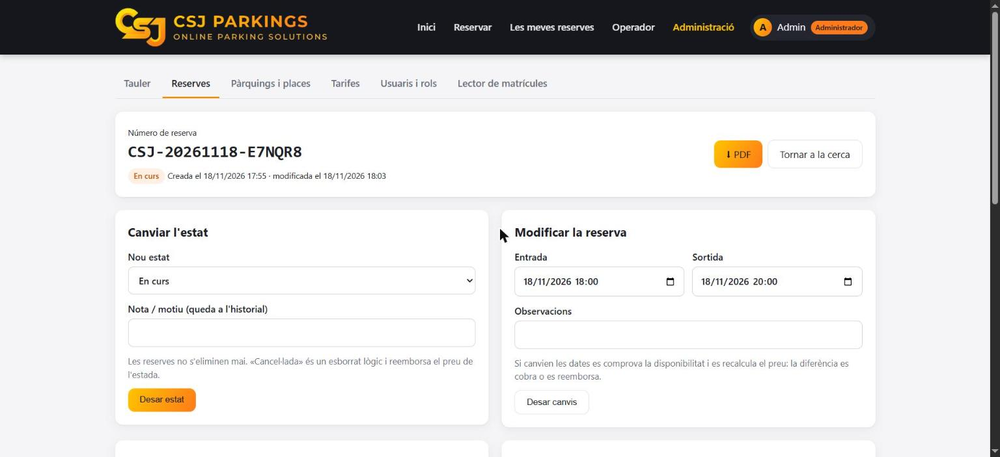

Sprint 2 · Implementació — Projecte ASIX2 (mòdul 0379)
De l'anàlisi i el disseny (Sprint 1) a una aplicació que funciona en servidors reals
màquines virtuals
Ubuntu Server 22.04
pàrquings reals de Tarragona
i 323 places
rols: client, operador
i administrador
proves funcionals
superades
RAID 1, Apache + PHP, MariaDB + phpMyAdmin, HTTPS, tallafocs, còpies completes i incrementals, monitoratge.
Registre, perfil, vehicles, pagaments, reserva amb preu automàtic + 10 %, PDF, panel d'administració i lector de matrícules.
Instal·lació, codi, model E/R, manual d'usuari amb captures, planificació i bibliografia.
Dos servidors separats: si cau el servidor web, el de monitoratge ho detecta i hi conserva les còpies
csjparkings.local/srvHem provat que el RAID aguanta la fallada d'un disc i que la web només funciona per HTTPS

Defensa en capes: si una falla, la següent continua protegint
UFW · fail2ban · SSH només amb clau · BD de l'app sense DELETE · Apache només llegeix el codi
Completa setmanal i incremental diària (binary logs), enviades a parking-mon. Restauració provada.
Prometheus + Grafana · 7 alertes (web, BD, RAID, disc…)

MariaDB · 10 taules + 2 vistes · el model del Sprint 1 corregit per complir el Sprint 2
usuaris | amb rol: client / operador / admin |
vehicles | matrícula única, marca, model… |
metodes_pagament | només els 4 últims dígits |
parquings · places · tarifes | dades reals i preus a la BD |
reserves | número, franja, preu, estat |
pagaments | 1:N — reserva, excés, reemborsament |
accessos · historial_reserves | lector i auditoria |
Codi petit i entenedor, i seguretat aplicada a cada capa
public/index.php: totes les peticions entren per aquí| Injecció SQL | sentències preparades (PDO) |
| XSS | htmlspecialchars a tota la sortida |
| CSRF | token a tots els formularis |
| Contrasenyes | bcrypt · bloqueig després de 5 intents |
| Sessió | galeta Secure, HttpOnly, SameSite · 30 min |
| Dades sensibles | AES-256-GCM · targetes: 4 dígits |
| Permisos | rol + propietari de cada reserva |
Vista prèvia instantània al navegador · el preu definitiu el calcula sempre el servidor

tarifes)| 1a i 2a hora | 1,90 €/h |
| A partir de la 3a | 0,20 €/h |
| Nocturna (22–6 h) | 0,60 €/h |
| Màxim diari | 4,00 € |
| Despeses de gestió | +10 % |
Exemple 10:00 → 13:00
1,90 + 1,90 + 0,20 = 4,00 € + 0,40 € = 4,40 €
La reserva es fa en una transacció: dues persones no poden agafar l'última plaça alhora.
El client rep un número únic i un PDF amb codi de barres per entrar al pàrquing


Format CSJ-AAAAMMDD-XXXXXX · 6 caràcters aleatoris sense 0/O ni 1/I per evitar confusions · només el titular, l'operador del pàrquing i l'administrador el poden veure.
La càmera llegeix la matrícula i l'aplicació decideix si obre la barrera

accessosGestió de pàrquings, places, tarifes, usuaris i totes les reserves


⚠️ L'enunciat diu que les reserves no es poden eliminar: «Cancel·lar» és un esborrat lògic, amb reemborsament i registre a l'historial. Ni tan sols l'usuari de BD de l'aplicació té permís DELETE.
Hem provat tant el que ha de funcionar com el que no s'ha de poder fer
| Preus (4 franges, nocturna i màxim diari) | ✅ |
| Reserva sense condicions / en el passat | ✅ rebutjada |
| Mateix vehicle, reserves solapades | ✅ rebutjada |
| Cancel·lació: reemborsament i historial | ✅ |
| Lector: entrada, massa d'hora, excés | ✅ |
| Cerca avançada de l'administrador | ✅ |
| 5 contrasenyes errònies → bloqueig 15 min | ✅ |
| Client entra a /admin → 403 | ✅ |
| Reserva d'un altre usuari → 404 | ✅ |
| Formulari sense token CSRF → 403 | ✅ |
<b>XSS</b> al nom → es mostra com a text | ✅ |
| Telèfon i DNI a la BD → xifrats | ✅ |
L'aplicació es va acabar dos dies abans del previst, i això ens va donar temps per a proves i documentació
https://csjparkings.local
client@csjparkings.catoperador@csjparkings.catadmin@csjparkings.cat
Matrícula de proves: 1234ABC
Tot el que és obligatori del Sprint 2 està fet i provat
Preguntes?